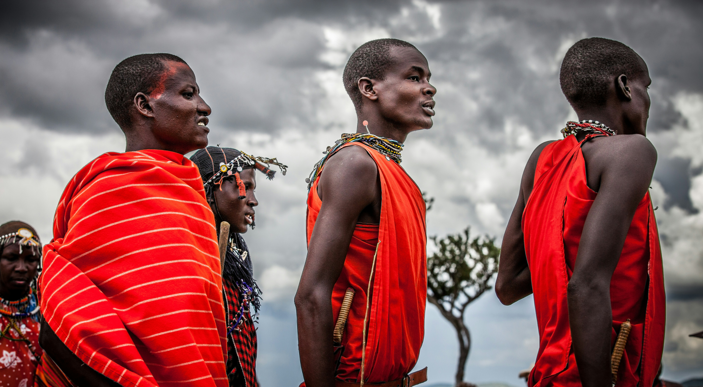

Maasai Mara
Location: Southern Kenya
Established: 1961
History: Maasai Mara, located in southern Kenya, is a renowned game reserve and one of Africa's most popular safari destinations. Established in 1961, it is named after the Maasai people who have traditionally inhabited the area and the Mara River that runs through it. The reserve is famous for its diverse wildlife, including the "Big Five" (lion, leopard, elephant, buffalo, rhinoceros), and the annual wildebeest migration.
Special Attractions:
- The Great Migration: A natural spectacle where millions of wildebeests, zebras, and other herbivores migrate from Serengeti to Maasai Mara in search of greener pastures.
- The Big Five: Opportunities to spot lion, leopard, elephant, buffalo, and rhinoceros during game drives.
- The Maasai Culture: Cultural experiences including visits to Maasai villages to learn about their traditions and way of life.
- The Hot Air Balloon Safaris: Scenic flights over the savannah at sunrise, offering breathtaking views and wildlife sightings from above.
Reserve Manager: Mr. Joseph Ole Mpaye
Mr. Joseph Ole Mpaye is the reserve manager of Maasai Mara. With a deep understanding of wildlife conservation and local community engagement, Mr. Mpaye oversees efforts to protect the reserve's ecosystem and promote sustainable tourism. His leadership ensures that visitors have a memorable and responsible safari experience in Maasai Mara.